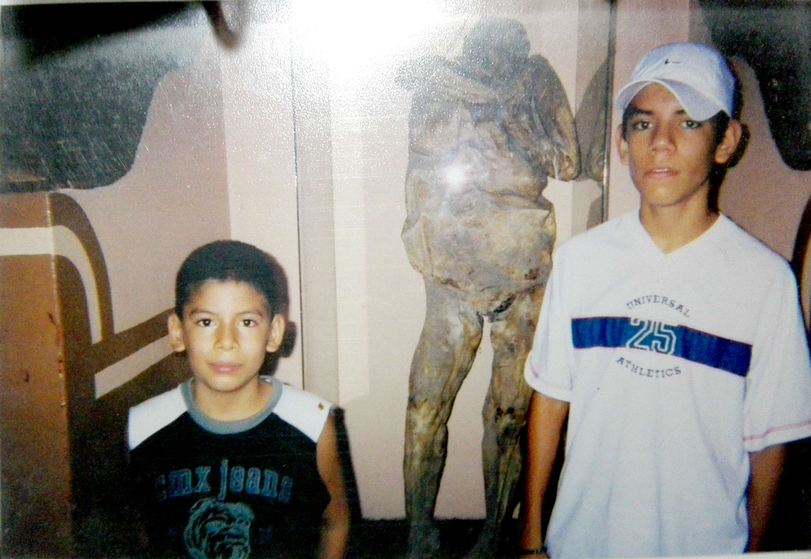
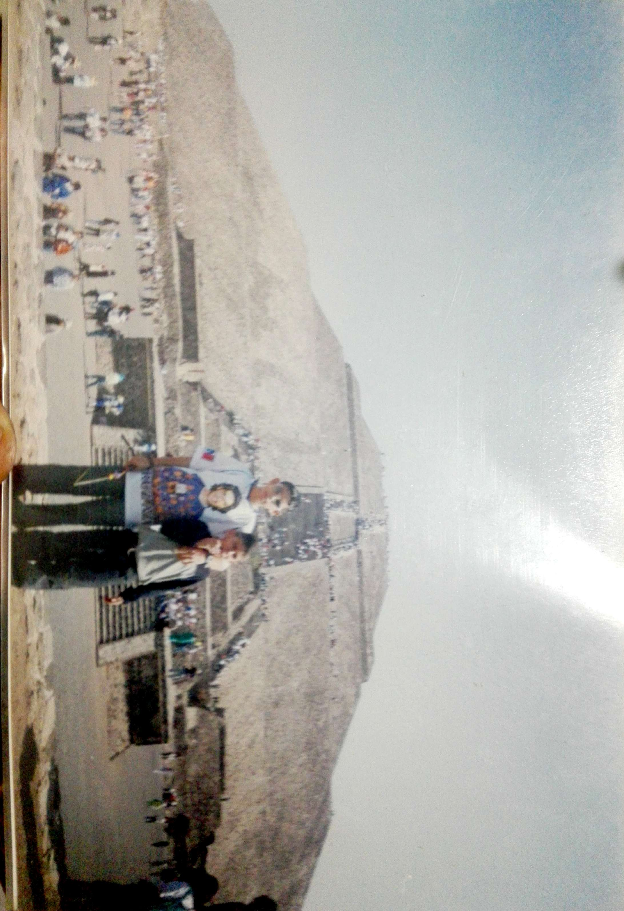
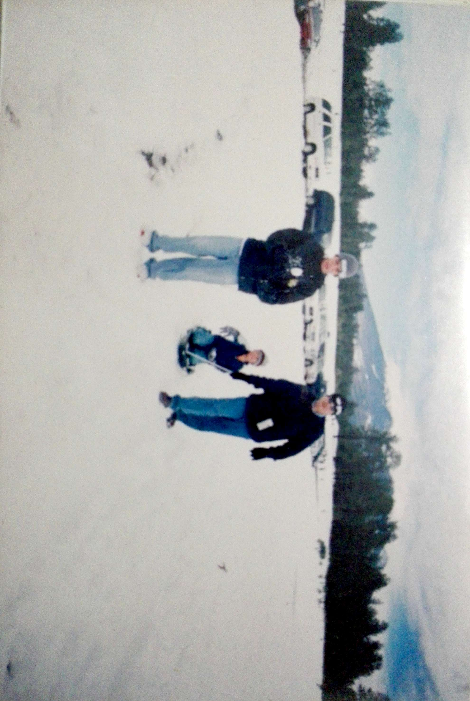
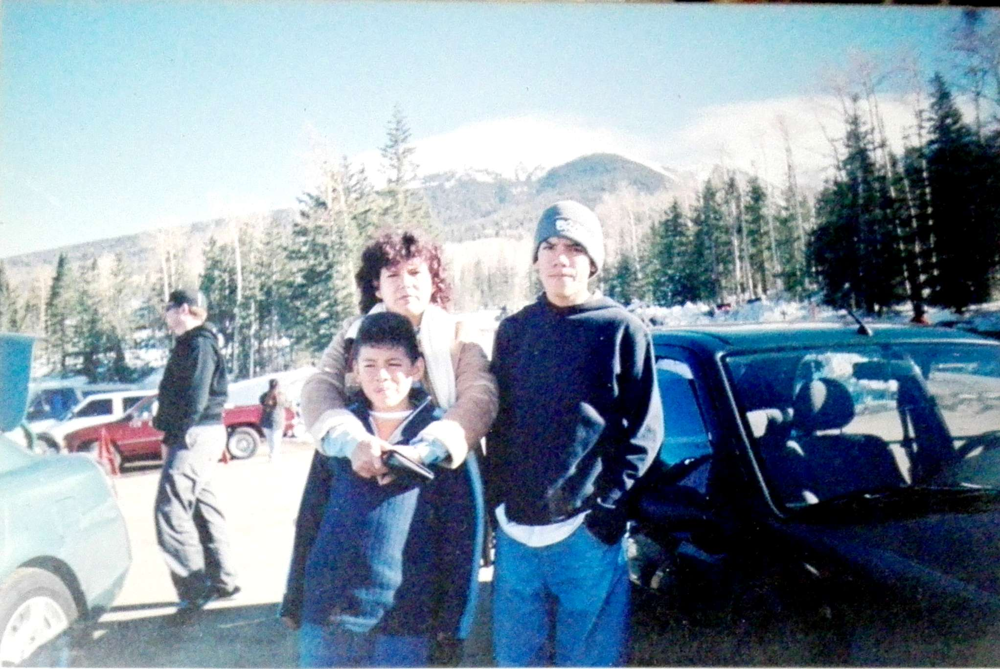
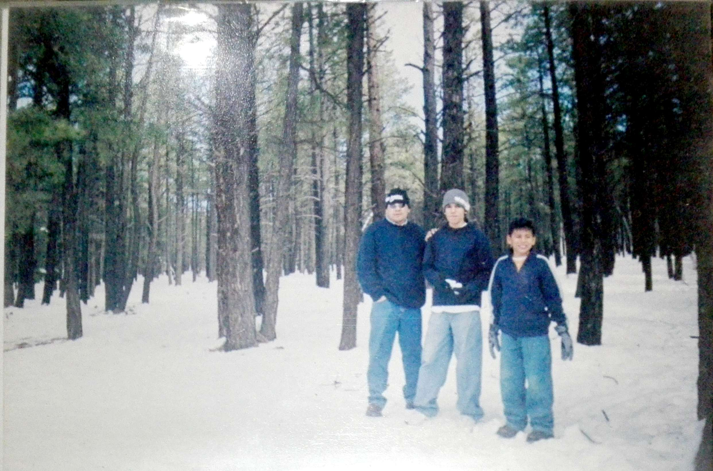
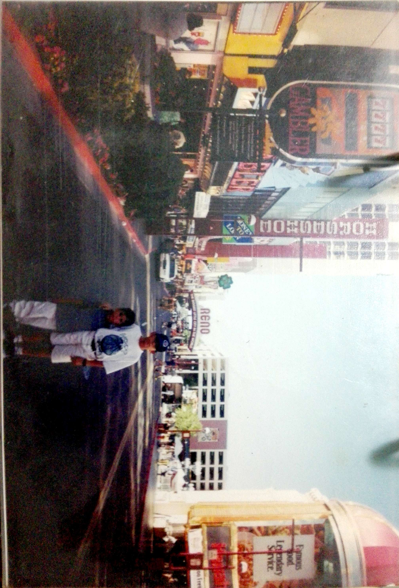
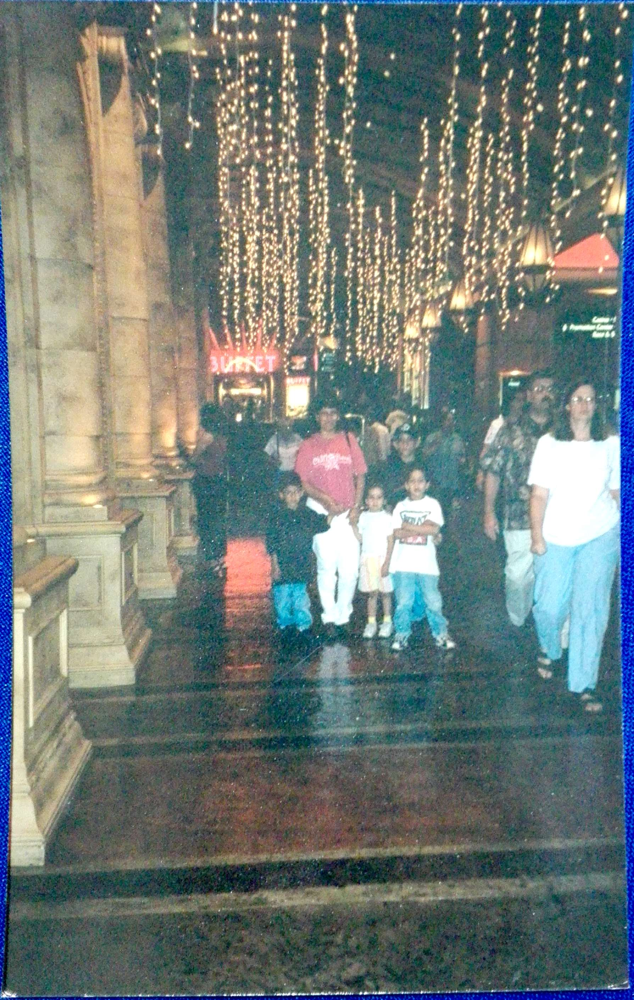
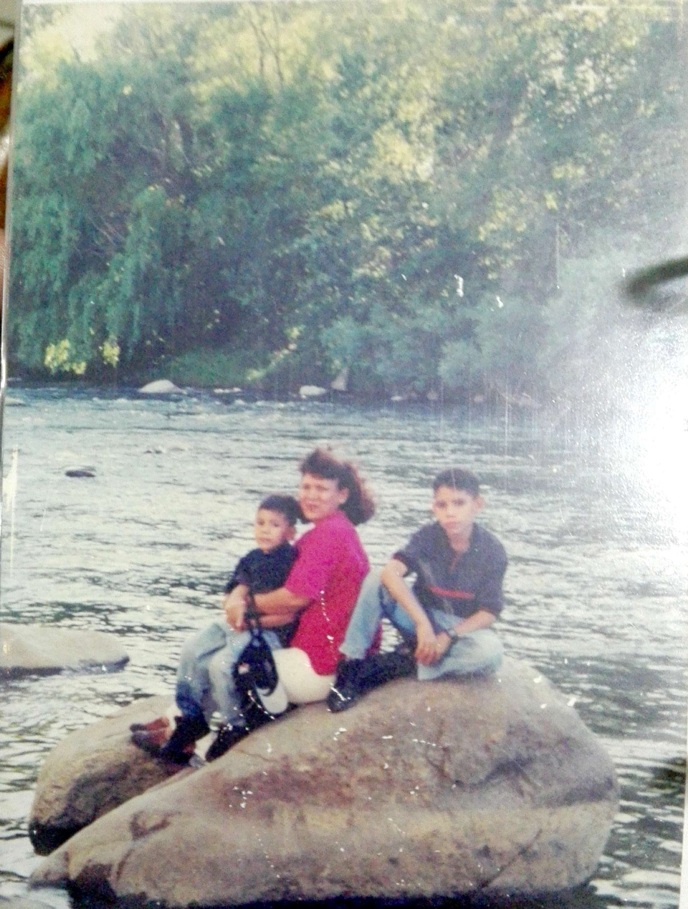
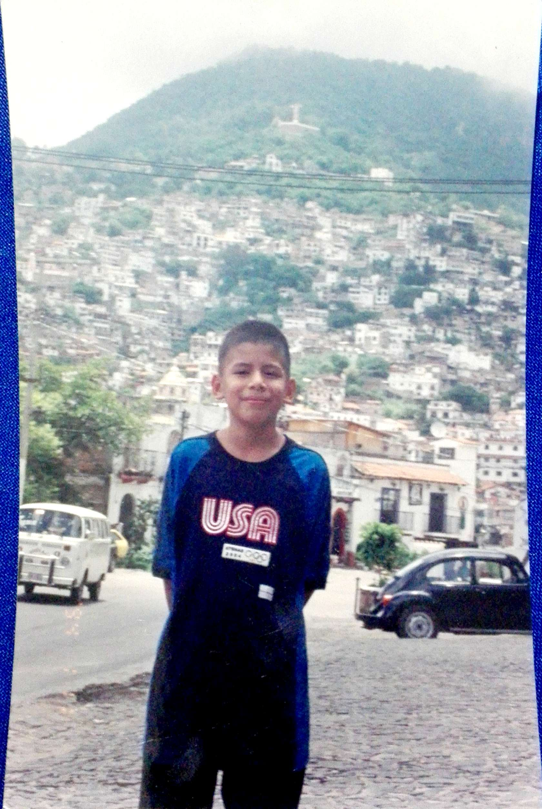

Daniel Hernandez
Daniel HernandezHablemos de mi infancia
Tengo vagas memorias de donde estudié el kinder, pero creo que se llamaba patria y lo único que recuerdo desafortunadamente es de un niño que me quitaba el lonche, lonche que mi madre se esforzaba en darme, mi sanduich, mi juguito y una manzana siempre me la quitaba lo que más me dolía era mi sanduich que era con quesito derretido. Bueno fue que no duré mucho ahí y pude pasar de él sin crecer traumado. Ya que no recuerdo mucho de mi kinder comenzaré a hablar de mi primaria que fue primeramente en el colegio niños heroes donde pasé mis primeros 3 años, nada fuera de lo normal era un chico problematico supongo que lo aprendí de mi amigo del kinder, recuerdo siempre golpear a un solo niño y ese mismo niño me invitaba a su casa a comer, también era un poco gordito, mi madre se encargaba de alimentarme bien, pasaba mucho tiempo jugando en la calle con mis amigos. Hasta que tuvimos que mudarnos a estados unidos exactamente a Arizona y de ahí no pasé, ahí seguí con mis estudios en creo 3 o 4 primarias diferentes ya que mis papá se mudaban seguido de casa, en todas hice amigos pero no era lo msimo que en mexico no podia hacer mucho en mis tiempos libres mas que ver la television pero hay que verle el lado bueno también tenían el halloween, comía en la escuela y cosas bien deliciosas como hamburgesas y pizzas, aparte que me gustaba ir a los centros comerciales y las niñas eran lindas recuerdo que me gustaba una cuando estaba en chendler pero era hermana de uno de mis mejores amigos, bueno aun que si no hubiera sido nada de el igualmente creo que no hubiera hecho nada. No recuerdo haberme metido en problemas cuando estaba allá pero si tenía amigos chicanos muy problematicos, podría decir que viviamos en ambientes algo peligrosos. Cuando regresamos de estados unidos entre a una primaria cerca de mi casa llamada cristobal colón, fue aquí donde perdí mis agallas de pelear con todo mundo cuando un niño mas grande que yo me hizo frente y me hizo darme cuenta que son mas poderosas las palabras que los puños, era un niño muy arrogante y engreido por haber regresado de estados unidos hablando ingles, para mi edad me sentía la gran cosa por hablar dos idiomas a la perfección y me aseguraba que todos los supieran, creo que por eso me conseguí varios enemigos. Esos 2 años de mi primaria fueron los mejores, conocí a muchos de los que son todavía mis amigos y con quienes sigo teniendo contacto, fue una epoca muy divertida y a la vez llena de problemas.
Teatro
Cuando estaba en el colegio niños heroes estaba en un taller de teatro me acuerdo mucho que tenían un colchon viejo donde practicabamos las "acrobacias", estuve en 3 interpretaciones, una era de bacterias contra anticuerpos(sí, yo era bacteria) y de las otras dos no recuerdo mucho pero me involucra a mi vestido de conejo y de oso (creo), incluso una vez me tocó desfilar vestido de sherif jaja.Lugares a donde viajé de niño
- Guanajuato 
- Ciudad de México 
- Guadalajara
- San blas
- Flagstaf(estados unidos)   
- Meza Arizona
- Chendler Arizona
- Queen creek Arizona
- Phoenix Arizona
- Reno Nevada   
- Tijuana
- Tepic Nayarit
- Puebla
- Pachuca
- Taxco 
Juegos favoritos de niño
- Escondidas
- tambo robado
- roña
- pataditas
- futbol
Caricaturas favoritas de niño
- Billy y mandy
- Power rangers
- Dragon ball
- Pokemon
- Avatar
Video juego favoritos
- Mario 64
- El señor de los anillos
- Mario kart
- Smash brothers
- Mario Party
Mi odisea en Los Mochis
Cuando era pequeño mis padres siempre me hablaban acerca de la responsabilidad y lo que venía como recompensa, a diario me daban responsabilidades desde limpiar mi cuarto hasta hacer mandados al centro pero todo esto venía siempre con una recompensa aveces me daban dinero otras me daban dulces, siempre me quedó bien grabado que despues de cada trabajo duro, vienen las gratificacione. Recuerdo la primera vez que me mandaron al centro, no tenía mucha idea de como agarrar camiones o como moverme entre las calles, sienceramente sentía miedo desde que salí de mi casa, tomar el camión yo creo que fue una de las desiciones mas dudosas que he tenido en mi vida, pero al final de cuenta subí al camión pagué mi peaje y tomé camino al centro de la ciudad, recuerdo no separar mi cabeza de la ventana repitiendome una y otra vez las instrucciones de mi madre para llegar a la tienda donde quería que le comprara hilo, cuando porfín llegué al centro y bajé del camión fue cuando comencé a sudar y mis pensamientos se volvieron confusos, apartir de ese punto no recordaba más las instrucciones de mi madre, así que empecé a guiarme por instinto y solo comencé a caminar; entre cuadrante y cuadrante pude dar con la tienda, apartir de ahí me sentí aliviado y sentí la gratificación más grande que había sentido en mi corta vida, ahí recordé lo que tenía que hacer, ir a la merceria pedir los hilos esperar un ticket y posteriormente pagar en caja, lo ejecuté correctamente y salí de la tienda de nuevo a las calles de la ciudad, sin tener idea de donde estaba. vagamente recordaba el camino que tomaba mi padre en el automovil y traté de seguir la misma ruta que el; así que caminé y caminé en linea recta hasta llegar a un boulevard donde ya tenía noción de como llegar a casa, recuerdo en que pensaba que nunca llegaría a casa me perdería y tendría que ser adoptado por otra familia(si es que me quería otra familia) caminé unas 20 cuadras más y porfín vi la calle que conectaba a mi casa; recuerdo tocar a la puerta empapado en sudor a lo que sale mi madre me pide los hilos la feria y me dice que entre a comer que ya esta servido, nunca supieron y espero que nunca sepa mi tan vergonzosa odisea atraves de mi ciudad natal Los Mochis Sinaloa.
Mascotas
- Cuando tenía aproximadamente 7 años tenía un perrito que se llamaba piugas un perrito que rescatamos de la calle, estaba todo desnutrido y lleno de pulgas por eso el nombre, creció fuerte y felíz hasta que mi abuelo lo atropeyo en su camioneta sin querer, desafortunadamente no tengo una foto de el pero se parecía mucho a scooby doo.
- A la edad de 8 años tuve varios pecesitos, esto fue durante mi estancia en estados unidos, como no podíamos tener perros en los lugares donde viviamos nos conformamos con tener unos peces, 4 peces dorados, 1 pez beta y un pez pleco. Tampoco tengo fotos de ellos pero quiero suponer que los han visto almenos una vez.
- Cuando tenía 10 adoptamos otro perrito el cual amo y cuido desde que lo tengo, su nombre es chopper y todavía vive, corre y juega es un niño para mi. Espero que esté conmigo mucho tiempo más y que siga así de alegre como siempre.